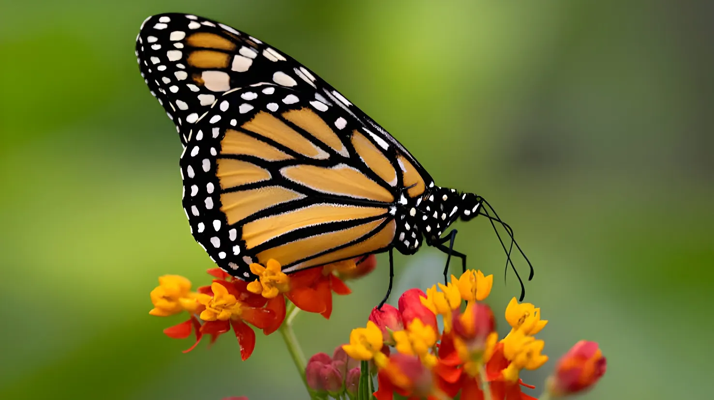

Porté par cinq vagues de chaleur et l'un des étés les plus secs jamais enregistrés, le grand comptage annuel de Butterfly Conservation a recensé près de 1,4 million de papillons et papillons de nuit diurnes au Royaume-Uni cet été — la deuxième meilleure saison en seize ans d'existence du recensement. Mais les scientifiques redoutent que cette même sécheresse, mortelle pour les chenilles et les plantes dont elles se nourrissent, ne prépare un effondrement des populations dès l'été prochain.
Chaque été depuis 2010, l'association britannique Butterfly Conservation organise le Big Butterfly Count, le plus grand recensement d'insectes au monde. Du 17 juillet au 9 août 2026, plus de 100 000 volontaires ont sillonné jardins et campagnes pour compter les papillons croisés en quinze minutes d'observation. Résultat : près de 1,4 million de papillons et de papillons de nuit diurnes répertoriés, soit la deuxième meilleure saison des seize années d'existence du comptage — la meilleure depuis 2019. Cette abondance s'explique par un printemps parmi les plus chauds jamais enregistrés puis par cinq vagues de chaleur successives, dans un été que le Met Office juge « de plus en plus probablement » le plus chaud jamais mesuré au Royaume-Uni.
La Belle-Dame, papillon migrateur qui rallie chaque année le Royaume-Uni depuis l'Afrique subsaharienne en plusieurs générations successives, a vu ses effectifs bondir de 335 % par rapport à 2025 — son deuxième meilleur score depuis la création du comptage en 2010. L'Azuré porte-queue et le Tircis fauve (gatekeeper) ont, eux, signé leurs meilleurs résultats jamais enregistrés dans l'histoire du comptage, tandis que le Cuivré commun affichait sa troisième meilleure année. Sur l'ensemble des espèces, c'est la Piéride du chou qui reste la plus abondante, avec 281 634 individus comptés, en hausse de 32 % par rapport à une année moyenne.
L'un des printemps les plus chauds jamais enregistrés au Royaume-Uni offre des conditions favorables à l'émergence précoce des papillons.
Butterfly Conservation organise le Big Butterfly Count 2026 ; 101 565 bénévoles participent au recensement à travers le pays.
Cinq vagues de chaleur se succèdent ; le Met Office juge de plus en plus probable qu'il s'agisse de l'été le plus chaud jamais mesuré au Royaume-Uni.
Le National Drought Group déclare plus de 70 % de l'Angleterre officiellement en sécheresse, l'ensemble du Royaume-Uni connaissant des conditions plus sèches que la normale.
Butterfly Conservation publie les résultats du comptage : la deuxième meilleure saison de papillons en seize ans, doublée d'une mise en garde pour 2027.
La chaleur et le grand soleil ont profité aux papillons adultes, plus actifs pour voler, se nourrir et se reproduire. Mais Butterfly Conservation met en garde : la sécheresse qui a accompagné cette chaleur pourrait avoir été fatale à de nombreuses chenilles ainsi qu'aux herbes et plantes sauvages dont elles se nourrissent, avant même qu'elles n'aient terminé leur cycle. Les étés exceptionnels de 1976 et 1995, eux aussi marqués par une sécheresse sévère, avaient été suivis d'un effondrement des populations de papillons — même si les sécheresses de 2018 et 2022 n'ont, elles, pas provoqué de crash comparable. Le naturaliste britannique Matthew Oates, qui consigne ses observations depuis 1964, se montre toutefois prudent : l'hiver humide qui a précédé cet été pourrait, selon lui, limiter les dégâts sur les plantes-hôtes des prairies.
Toutes les espèces n'ont pas profité de la chaleur : le Tircis, la Piéride de la moutarde et l'Amaryllis ont été observés en nombre inférieur à la moyenne lors du comptage 2026, avec des déclins respectifs de 44 %, 54 % et 39 % depuis 2011. Ce constat s'inscrit dans une tendance de fond préoccupante : Butterfly Conservation rappelle que 80 % des espèces de papillons britanniques ont décliné depuis les années 1970, et que 2024 restait l'une des pires années jamais enregistrées, au point que l'association avait déclaré une « urgence papillons ».
« On voit beaucoup de papillons adultes cet été, mais un bel été pour les adultes n'est pas forcément un bel été pour les populations : ce qui compte, c'est ce qui se passe au sol, pour les chenilles et les plantes dont elles dépendent. »
— Richard Fox, responsable scientifique de Butterfly ConservationLa saison 2026 restera comme l'une des plus belles pour les amateurs de papillons britanniques, deux ans à peine après une « urgence papillons » déclenchée par le pire comptage jamais enregistré en 2024. Mais ce répit reste fragile et à double tranchant : la même chaleur qui a permis aux adultes de proliférer a aussi asséché les habitats dont dépendent les générations suivantes. Entre l'espoir d'un rebond durable et la crainte d'un nouveau crash façon 1976 ou 1995, les scientifiques attendront l'été 2027 pour savoir si ce beau bilan n'aura été qu'un feu de paille climatique.
Driven by five heatwaves and one of the driest summers on record, Butterfly Conservation's annual count logged almost 1.4 million butterflies and day-flying moths across the UK this summer — the second-best season in the survey's 16-year history. But scientists fear the same drought, deadly for caterpillars and the plants they depend on, could be setting up a population crash as soon as next summer.
Every summer since 2010, the UK charity Butterfly Conservation has run the Big Butterfly Count, the world's largest insect survey. From 17 July to 9 August 2026, more than 100,000 volunteers spent fifteen minutes at a time logging every butterfly they spotted in gardens and the countryside. The result: almost 1.4 million butterflies and day-flying moths recorded, the second-best season in the count's 16-year history and the best since 2019. The abundance followed one of the warmest springs on record and five successive heatwaves, in a summer the Met Office says is "increasingly likely" to be the hottest ever measured in the UK.
The painted lady, a migratory butterfly that reaches the UK each year from sub-Saharan Africa across several generations, saw its numbers jump 335% compared with 2025 — its second-highest count since the survey began in 2010. The holly blue and the gatekeeper both posted their best-ever results in the history of the count, while the small copper had its third-best year. Across all species, the small white remained the most numerous, with 281,634 individuals counted, up 32% on an average year.
One of the warmest springs on record in the UK creates favourable conditions for early butterfly emergence.
Butterfly Conservation runs the 2026 Big Butterfly Count; 101,565 volunteers take part nationwide.
Five heatwaves sweep the UK; the Met Office says it is increasingly likely to be the hottest summer on record.
The National Drought Group declares more than 70% of England officially in drought, with the whole UK drier than usual.
Butterfly Conservation publishes the results: the second-best butterfly season in 16 years, alongside a warning for 2027.
Heat and sunshine were good news for adult butterflies, giving them more time to fly, feed and breed. But Butterfly Conservation warns the accompanying drought may have killed off caterpillars and the wildflowers and grasses they feed on, before many could complete their life cycle. The exceptional summers of 1976 and 1995, also marked by severe drought, were followed by population crashes — though the droughts of 2018 and 2022 did not trigger a comparable collapse. Naturalist Matthew Oates, who has kept butterfly diaries since 1964, remains cautiously hopeful: the wet winter that preceded this summer, he says, may have limited the damage to grassland host plants.
Not every species benefited from the heat: the speckled wood, green-veined white and ringlet were all recorded below average in the 2026 count, down 44%, 54% and 39% respectively since 2011. The figures sit within a longer-term trend Butterfly Conservation calls deeply concerning: 80% of UK butterfly species have declined since the 1970s, and 2024 remained one of the worst years on record, prompting the charity to declare a "butterfly emergency."
"People saw plenty of adult butterflies this summer, but a good summer for adults isn't the same as a good summer for populations: what matters is what's happening on the ground, to the caterpillars and the plants they depend on."
— Richard Fox, Head of Science, Butterfly ConservationThe 2026 season will be remembered as one of the best in years for Britain's butterfly-watchers, just two years after a "butterfly emergency" triggered by the worst count on record in 2024. But the reprieve is fragile and double-edged: the same heat that let adults thrive also dried out the habitats the next generation depends on. Caught between hope for a lasting rebound and fear of a 1976- or 1995-style crash, scientists will have to wait until summer 2027 to know whether this year's good news was more than a passing climatic bright spot.